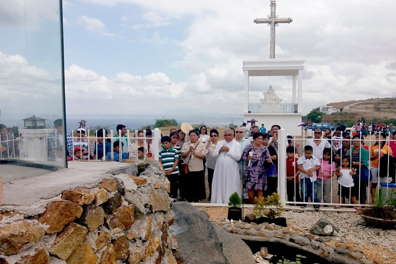
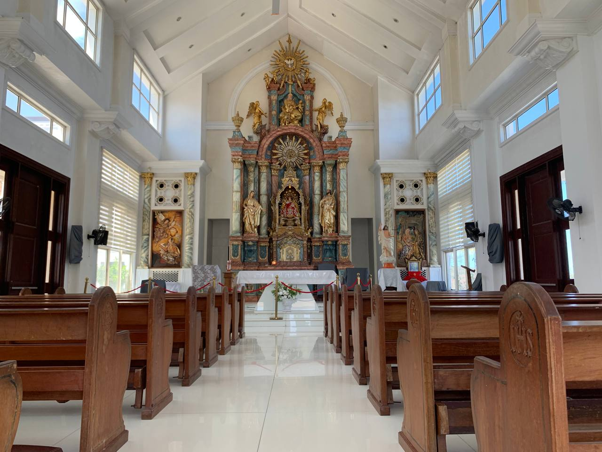
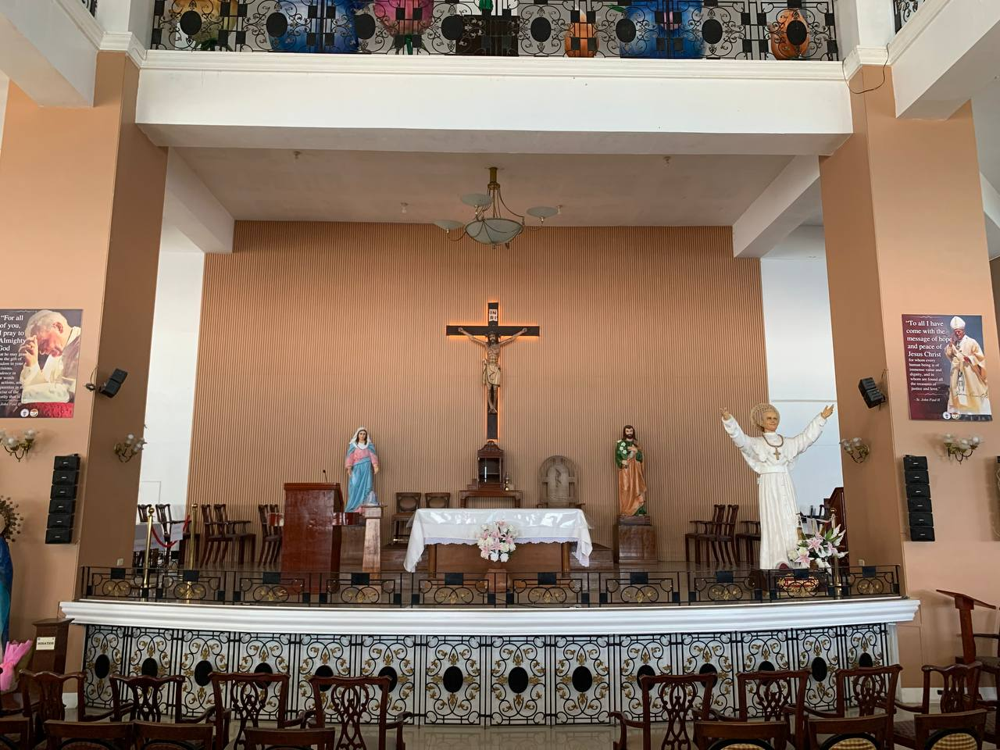
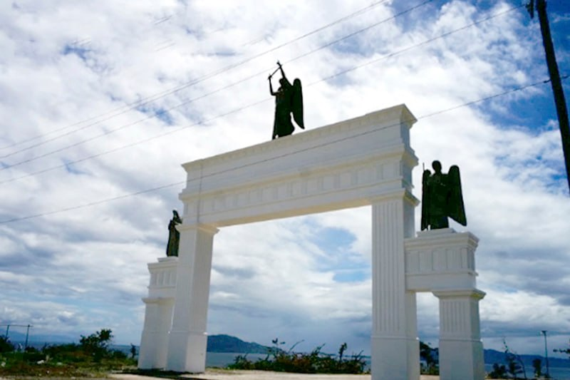
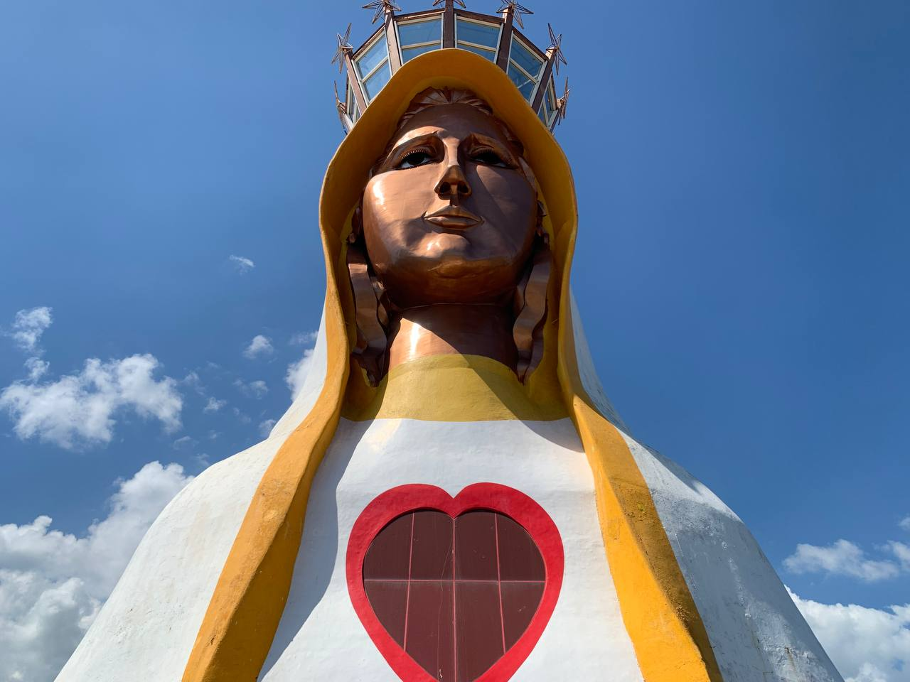
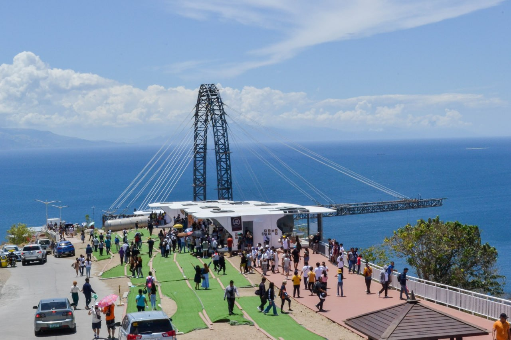
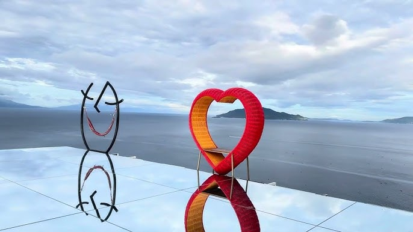
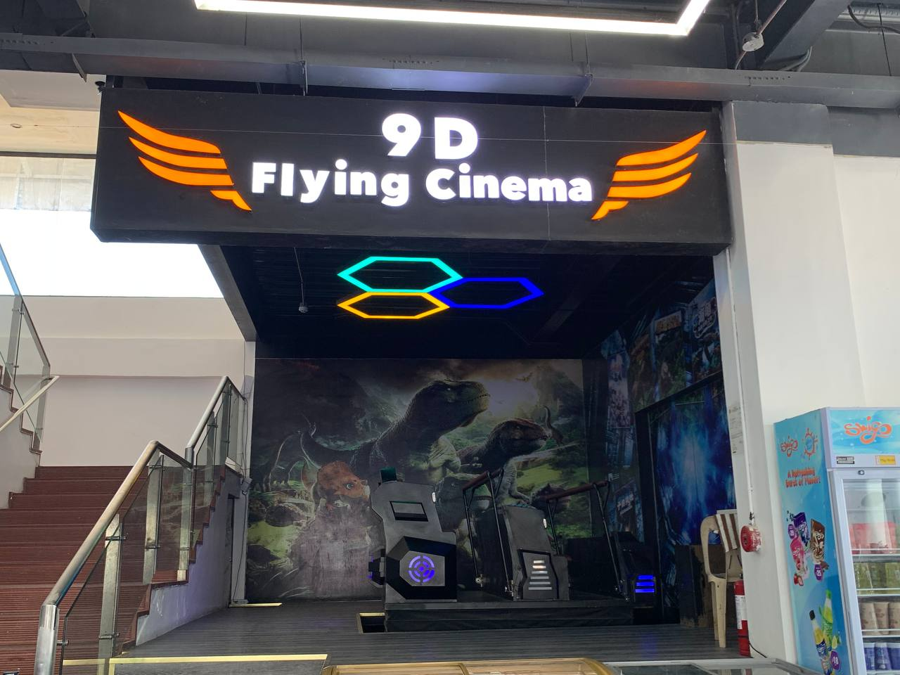
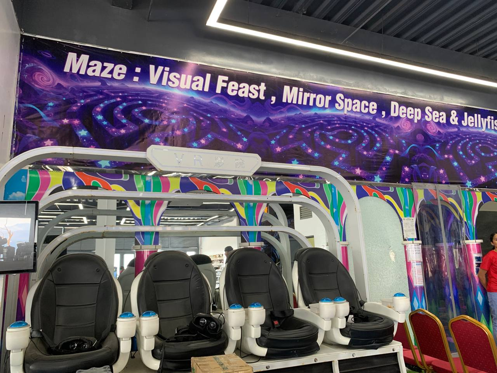

Perched atop the scenic plateau of Batangas City, the MonteMaria Shrine is much more than a religious landmark, it is a destination where spiritual pilgrimage meets panoramic beauty. Home to the Mother of All Asia – Tower of Peace, the tallest statue of Mary in the world, the shrine offers a serene escape for both the faithful and the curious.
Whether you are looking for a quiet moment of reflection or a scenic spot of the coastline, here are the primary activities and landmarks you can enjoy.









Beyond the spiritual majesty of the Tower of Peace, MonteMaria has introduced modern, immersive attractions designed to engage the senses and offer a different perspective on the shrine’s message of peace and reflection.